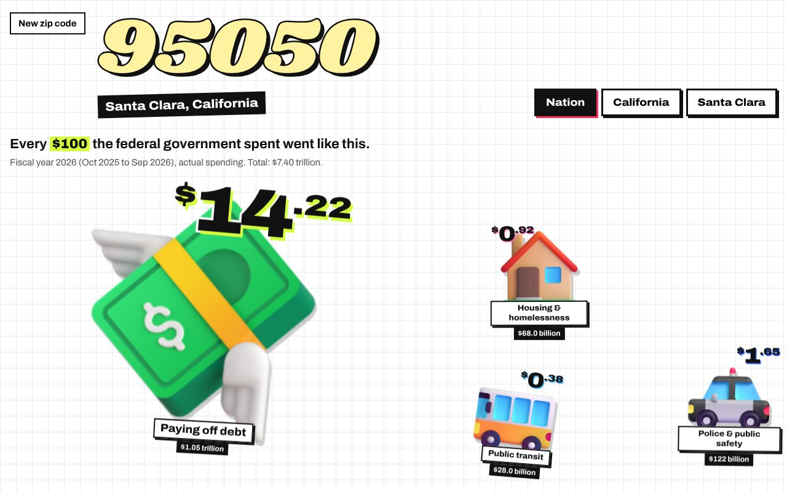
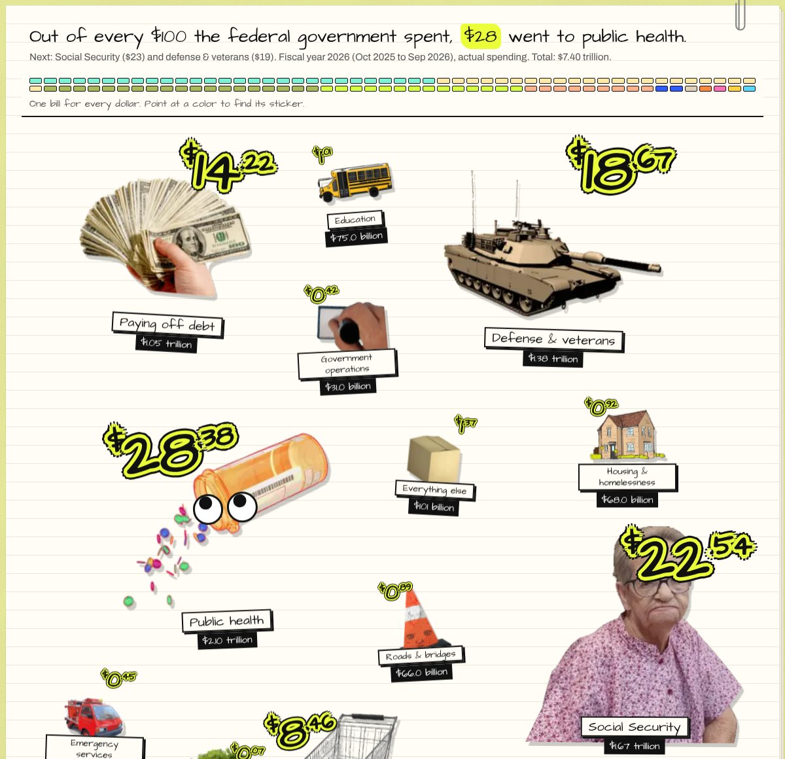

$100, not billions


$22 out of $100 you can feel. $1.6 trillion you can't.
Crossing the Bay Bridge, my friend asked why we still pay a toll if our taxes cover roads. I didn't know, and no government site made it easy to find out. So I built one for teens and young adults.
Teens and young adults pay taxes and have no idea where the money goes. The sites that explain it are boring and don't tell a story.
Type your zip code. See where every $100 went, told like a fairy tale.
Dollars out of $100, not billions. Nobody can picture $1.6 trillion.
It started on the Bay Bridge. My friend asked: why do tolls exist, how long does a bridge take to pay off, and what's the point of taxes if we still pay the toll?
The answers are out there, in budget PDFs, in billions, with zero story.
Who it's for: teens and young adults getting their first paychecks and wondering where the money goes.
The brief: SVSD asked for a product built for a specific group of people, centered on storytelling.
Big cities publish budgets. Small towns don't make it easy. I needed both.
Nobody thinks in billions. Everyone gets $100.


$22 out of $100 you can feel. $1.6 trillion you can't.

Together they're a huge share of federal spending. Hiding them would look cleaner and be wrong.
City budgets change every year. Nobody should have to retype them.
Live at feefifo.fund. No framework, no build step.
The psychedelic version was the most fun to make and the first thing I cut.
Switching to $100 did more than any visual I added.
Only California and New York state budgets are in so far.
The Leave a footprint folder is the start: from where did it go to what can I do about it.